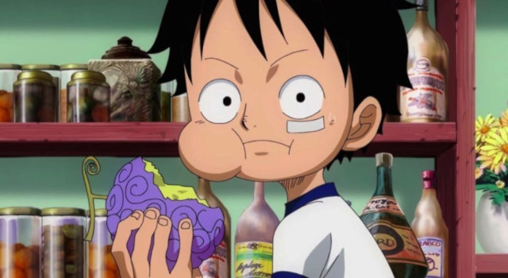
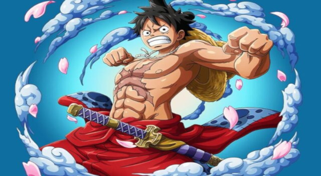

História
Nascido na Vila Foosha, Luffy acidentalmente comeu a Gomu Gomu no Mi aos 7 anos de idade, que deu ao seu corpo propriedades de borracha Nesta época, Luffy conheceu Shanks, "o Ruivo", que lhe deu seu chapéu de palha como parte de uma promessa para que eles se encontrassem novamente. Luffy é o filho do líder Revolucionário Monkey D. Dragon, neto paterno do herói da Marinha Monkey D. Garp, irmão jurado do falecido "Punhos de Fogo" Portgas D. Ace e do chefe de gabinete Revolucionário Sabo, e filho adotivo de Curly Dadan. Ele é uma das poucas pessoas no mundo que carregam a Vontade de D.
Luffy enfrentou inúmeras forças globais que encontrou, começando contra os piratas mais poderosos do East Blue e avançando para confrontos contra a Marinha, os Shichibukai, a Cipher Pol, Nobres Mundiais e até mesmo os Yonkou, emergindo vitorioso na maior parte destes confrontos. Ele invadiu e indiretamente causou a destruição de Enies Lobby, escapou e causou uma fuga em massa em Impel Down, e foi uma figura central na Guerra de Marineford. Ele derrotou ou fez amizade com sete dos onze antigos Shichibukai, antes da dissolução da organização, e invadiu o território de dois Yonkou. As realizações e a herança familiar de Luffy fizeram com que ele fosse rotulado como um "Futuro Elemento Perigoso", enquanto ganhava a reputação de ser "imprudente" e, em alguns casos, "insano", ganhando a ira do Almirante da Frota Sakazuki, do Quartel-General da Marinha e até mesmo do Governo Mundial.
Luffy também tem uma propensão para atrair seguidores e, sem intenção, foi nomeado líder da Grande Frota do Chapéu de Palha, composta por sete tripulações piratas que juraram vir em seu auxílio sempre que ele desejasse. Depois de saber disso e de suas façanhas contra os Piratas da Big Mom, a imprensa rotulou Luffy como o "Quinto Imperador do Mar", embora muitas figuras proeminentes considerem isso um exagero.
Tendo tido uma recompensa de 300.000.000 antes de chegar ao Arquipélago de Sabaody, Luffy foi um dos onze "Supernovas", piratas que simultaneamente alcançaram a Red Line com recompensas acima de 100.000.000 pouco antes da Guerra de Marineford. Ele, os outros dez Supernovas e Marshall D. Teach foram posteriormente referidos como a "Pior Geração". Eventualmente, suas conquistas e reputação contribuiram para sua atual recompensa de 1.500.000.000.